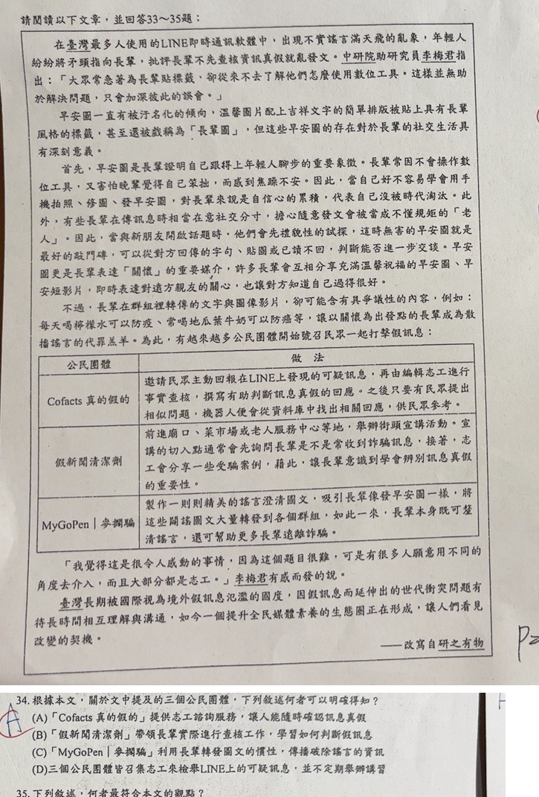

分享原卷｜第34題
完整原題
作答所需文章／材料
在臺灣最多人使用的LINE即時通訊軟體中，出現不實謠言滿天飛的亂象，年輕人紛紛將矛頭指向長輩，批評長輩不先查核資訊真偽就亂發文。中研院助研究員李梅君指出：「大眾常急著為長輩貼標籤，卻從來不去了解他們怎麼使用數位工具。這樣並無助於解決問題，只會加深彼此的誤會。」 早安圖一直被汙名化的傾向，溫馨圖片配上吉祥文字的簡單排版被貼上具有長輩風格的標籤，甚至還被戲稱為「長輩圖」，但這些早安圖的存在對於長輩的社交生活具有深刻意義。 首先，早安圖是長輩證明自己跟得上年輕人腳步的重要象徵。長輩常因不會操作數位工具，又害怕晚輩覺得自己笨拙，而感到焦慮不安。因此，當自己好不容易學會用手機拍照、修圖、發早安圖，對長輩來說是自信心的累積，代表自己沒被時代淘汰。此外，有些長輩在傳訊息時相當在意社交分寸，擔心隨意發文會被當成不懂規矩的「老人」。因此，當拿新朋友開啟話題時，他們會先禮貌性的試探，這時無害的早安圖就是最好的敲門磚，可以從對方回傳的字句、貼圖或已讀不回，判斷能否進一步交談。早安圖更是長輩表達「關懷」的重要媒介，許多長輩會互相分享充滿溫馨祝福的早安圖、早安短影片，即時表達對遠方親友的關心，也讓對方知道自己過得很好。 不過，長輩在群組裡轉傳的文字與圖像影片，卻可能含有具爭議性的內容，例如：每天喝檸檬水可以防疫、常喝地瓜葉牛奶可以防癌等，讓以關懷為出發點的長輩成為散播謠言的代罪羔羊。為此，有越來越多公民團體開始號召民眾一起打擊假訊息。 ［各公民團體做法見下表］ 「我覺得這是很令人感動的事情，因為這個題目很難，可是有很多人願意用不同的角度去介入，而且大部分都是志工。」李梅君有感而發的說。 臺灣長期被國際視為境外假訊息氾濫的國度，因假訊息而延伸出的世代衝突問題有待長時間相互理解與溝通，如今一個提升全民媒體素養的生態圈正在形成，讓人們看見改變的契機。 ——改寫自研之有物| 公民團體 | 做法 |
|---|---|
| Cofacts真的假的 | 邀請民眾主動回報在LINE上發現的可疑訊息，再由編輯志工進行事實查核，撰寫有助判斷訊息真假的回應。之後只要有民眾提出相似問題，機器人便會從資料庫中找出相關回應，供民眾參考。 |
| 假新聞清潔劑 | 前進廟口、菜市場或老人服務中心等地，舉辦街頭宣講活動。宣講時的加入點通常會先詢問長輩是不是常收到詐騙訊息，接著，志工會分享一些受騙案例，藉此，讓長輩意識到學會辨別訊息真假的重要性。 |
| MyGoPen｜麥擱騙 | 製作一則則精美的謠言澄清圖文，吸引長輩像發早安圖一樣，將這些闢謠圖文大量轉發到各個群組。如此一來，長輩本身既可澄清謠言，還可幫助更多長輩遠離詐騙。 |
根據本文，關於文中提及的三個公民團體，下列敘述何者可以明確得知？
(A) 「Cofacts真的假的」提供志工諮詢服務，讓人能隨時確認訊息真假
(B) 「假新聞清潔劑」帶領長輩實際進行查核工作，學習如何判斷假訊息
(C) 「MyGoPen｜麥擱騙」利用長輩轉發圖文的慣性，傳播破除謠言的資訊
(D) 三個公民團體皆召集志工來檢舉LINE上的可疑訊息，並不定期舉辦講習
先想一想，再查看答案、解說與原圖
原卷作答：原卷藍筆A，紅筆訂正C。
(C) 「MyGoPen｜麥擱騙」利用長輩轉發圖文的慣性，傳播破除謠言的資訊
逐項解析
| 選項與原句 | 判讀 | 句意與判斷理由 |
|---|---|---|
| (A) 「Cofacts真的假的」提供志工諮詢服務，讓人能隨時確認訊息真假 | 不選 | 原文是志工先查核並寫回應，之後由機器人找資料庫回覆類似問題，未說由志工提供隨時諮詢或隨時確定所有新訊息真假。 |
| (B) 「假新聞清潔劑」帶領長輩實際進行查核工作，學習如何判斷假訊息 | 不選 | 原文是街頭宣講、詢問詐騙經驗及分享受騙案例，沒有寫帶領長輩實際查核。 |
| (C) 「MyGoPen｜麥擱騙」利用長輩轉發圖文的慣性，傳播破除謠言的資訊 | 應選 | 原表直接說製作闢謠圖文，吸引長輩像發早安圖一樣轉發到群組，完全相符。 |
| (D) 三個公民團體皆召集志工來檢舉LINE上的可疑訊息，並不定期舉辦講習 | 不選 | 各團體方法不同，原文沒有說三者都檢舉LINE訊息及舉辦講習。 |
詳細說明與解題步驟
選C。MyGoPen的表格明說，製作精美的謠言澄清圖文，吸引長輩像發早安圖一樣轉發到各群組，正是利用轉發習慣傳播闢謠資訊。
A將志工事實查核、機器人查資料庫的流程擴張成隨時志工諮詢，原文沒有支持；B把宣講和案例分享換成長輩親自查核；D把三個不同方法概括成相同活動，皆超出原文。
原AI選A，忽略C有直接文本證據，也混淆Cofacts志工與機器人的工作，現依完整原文訂正為C。
核對註記：已實開真正上傳原卷及本題裁圖，逐題核對題幹、全部選項與必要閱讀材料。未提供實際考試日期，日期採首次使用者出題訊息的台灣日期；無教材冊章證據，歸綜合。
原圖（僅本題）
